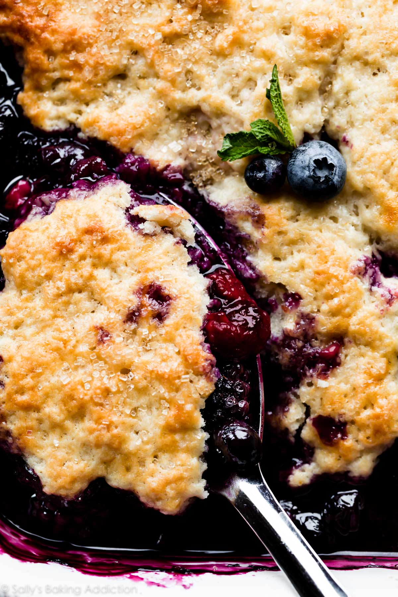

Berry Cobbler

As decadent as it is stunning; berry cobbler is a delightful mix of tangy
and sweet berries topped with a perfectly baked crumble top.
Ingredients
Filling
- 8 cups berry mix; blueberries, blackberries, raspberries,
strawberries
- 1/2 cup white, granulated sugar
- 2 tbsp cornstarch
- 1 tps lemon juice
- 1 tsp vanilla extract
Biscuit Topping
- 1 1/2 cups all-purpose flour
- 1/3 cup granulated sugar
- 1 1/2 tsp baking powder
- 1/2 tsp salt
- 6 tbsp cold, unsalted butter
- 1/2 cup cold buttermilk
- For topping - 1 tbsp buttermilk and coarse sugar
Steps
- Preheat the oven to 350°F (177°C) and grease a 9x13-inch pan.
- In a large bowl, gently fold the berries, sugar, cornstarch, lemon juice,
and vanilla extract together until thoroughly combined. Spread filling evenly into prepared pan.
- Whisk the flour, sugar, baking powder, and salt together in a large bowl. Using a pastry
cutter or two forks, cut the butter into the mixture until it resembles coarse meal
, pea-sized crumbs. A pastry cutter makes this step very easy and quick! You could also use a food processor.
While slowly stirring, slowly drizzle in 1/2 cup buttermilk. Mix until evenly combined. Take handfuls
of dough and gently flatten out. Place dough all over the top of the berry filling. There's no special
trick to this—just flatten the dough in sections and cover most of the berries.
- Brush the top of the biscuit dough with 1 Tablespoon of buttermilk and then sprinkle with coarse sugar. These
two are optional, but both help achieve a shiny, crunchy, golden brown crust.
- Bake for 45-55 minutes, or until golden brown and biscuit topping is cooked through. Stick a toothpick
into the biscuit topping, if it comes out clean, it is cooked through and the cobbler is done. Set the pan on
a wire rack, then cool for 5 minutes before serving. Serve warm with vanilla ice cream or whipped cream.